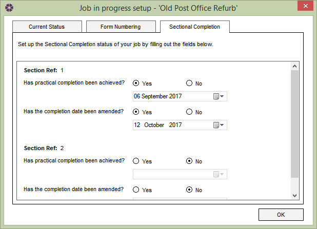

Job in Progress - Sectional Completion tab |
Please Note: This tab will only be populated with editable fields if details of sections have previously been entered in the Sectional Completion editor.
This tab will list all the sections in the active Job with the following options in each section:

See Also:
Create new Job in Progress
Job in Progress - Current Status tab
Job in Progress - Form Numbering tab